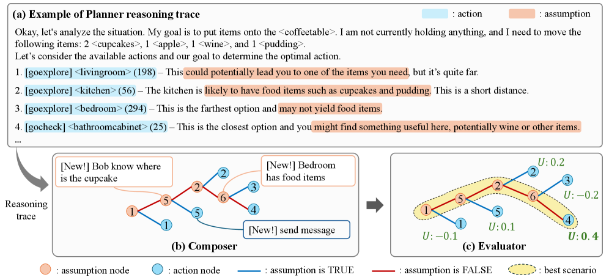

ICLR 2026 Poster
Embodied agents operating in multi-agent, partially observable, and decentralized environments must plan and act despite pervasive uncertainty about hidden objects and collaborators’ intentions. Recent advances in applying Large Language Models (LLMs) to embodied agents have addressed many long-standing challenges, such as high-level goal decomposition and online adaptation. Yet, uncertainty is still primarily mitigated through frequent inter-agent communication. This incurs substantial token and time costs, and can disrupt established workflows, when human partners are involved. We introduce PCE, a Planner-Composer-Evaluator framework that converts the fragmented assumptions latent in LLM reasoning traces into a structured decision tree. Internal nodes encode environment assumptions and leaves map to actions; each path is then scored by scenario likelihood, goal-directed gain, and execution cost to guide rational action selection without heavy communication. Across two challenging multi-agent benchmarks (C-WAH and TDW-MAT) and three diverse LLM backbones, PCE consistently outperforms communication-centric baselines in success rate and task efficiency while showing comparable token usage. Ablation results indicate that the performance gains obtained by scaling model capacity or reasoning depth persist even when PCE is applied, while PCE consistently raises the baseline across both capacity and reasoning-depth scales, confirming that structured uncertainty handling complements both forms of scaling. A user study further demonstrates that PCE produces communication patterns that human partners perceive as more efficient and trustworthy. Together, these results establish a principled route for turning latent LLM assumptions into reliable strategies for uncertainty-aware planning.
Generates reasoning traces for candidate actions and surfaces latent uncertainty assumptions.
Builds a scenario tree where internal nodes are assumptions and leaf nodes are physical/communication actions.
Scores each path via
U(S, a) = L(S) · G(a) - λC(a)
to select rational actions under uncertainty.

Flow from reasoning trace to action selection. (a) The Planner produces a reasoning trace. (b) The Composer extracts hypotheses from the trace, structures them into a decision tree, and, when needed, generates new assumptions and communication actions to expand unexplored branches. (c) The Evaluator scores each path; The highlighted path indicates the scenario whose leaf node achieves the maximum score (U), determining the agent's final selected action.
@inproceedings{seo2026from,
title={From Assumptions to Actions: Turning {LLM} Reasoning into Uncertainty-Aware Planning for Embodied Agents},
author={SeungWon Seo and SooBin Lim and Seongrae Noh and Haneul Kim and HyeongYeop Kang},
booktitle={The Fourteenth International Conference on Learning Representations},
year={2026},
url={https://openreview.net/forum?id=GODFBZhFcX}
}